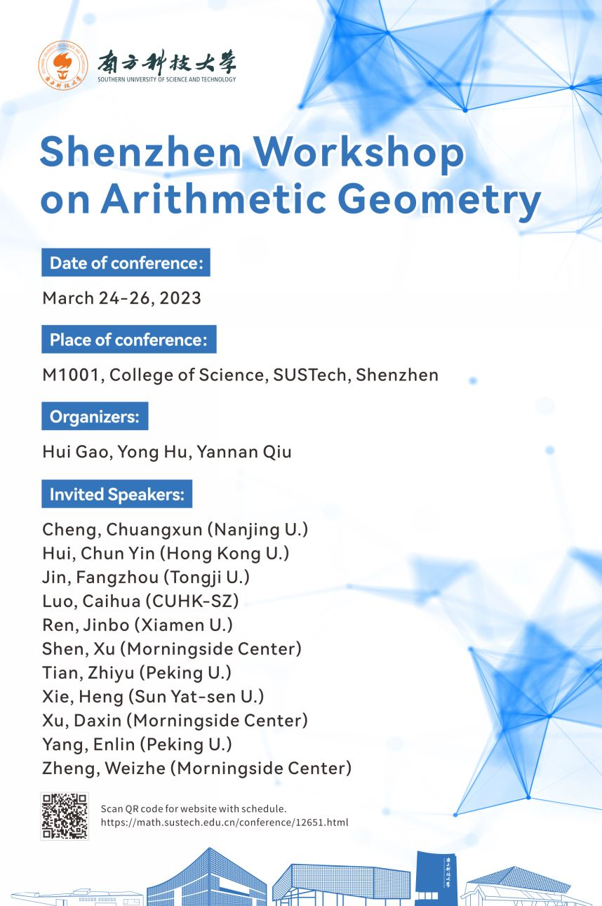
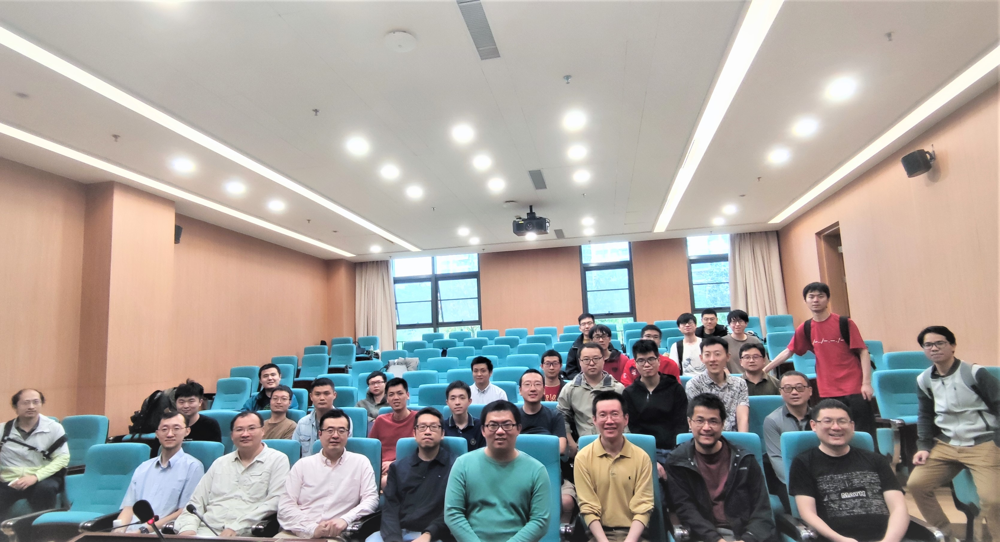

Shenzhen Workshop on Arithmetic Geometry
--------------------------------
Time: March 24-26, 2023.
(Starts on March 24 morning; ends before March 26 noon).
Place: SUSTech, Shenzhen
Organizers: Hui Gao, Yong Hu, Yannan Qiu
--------------------------------
Schedule, Title and Abstracts (updated, 2023.3.17).
Poster (low resolution version). click to enlarge

Group photo (some speakers left conference early, sorry!). click to enlarge

Speakers:
Cheng, Chuangxun (Nanjing U.)
Hui, Chun Yin (Hong Kong U.)
Jin, Fangzhou (Tongji U.)
Luo, Caihua (CUHK-SZ)
Ren, Jinbo (Xiamen U.)
Shen, Xu (Morningside Center)
Tian, Zhiyu (Peking U.)
Xie, Heng (Sun Yat-sen U.)
Xu, Daxin (Morningside Center)
Yang, Enlin (Peking U.)
Zheng, Weizhe (Morningside Center)
--------------------------------
Registration deadline: March 1st.
--------------------------------